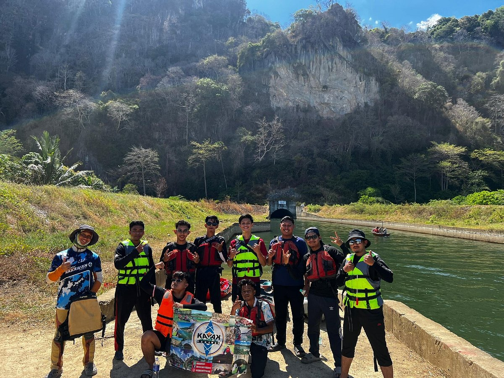

This kayaking event features an 8km round trip starting from Tebing Tinggi, passing through a scenic water tunnel, and ending at Kampung Wai. It showcases the natural beauty of the area, with participants paddling through green waters and surrounding hills.
The event is suitable for all skill levels, from beginners to experienced kayakers. Safety measures and equipment are provided to ensure a secure and enjoyable experience for everyone.
Scenic view of the kayaking route
Kayakers enjoying the adventure
Beautiful landscape of Perlis

Activities include guided kayaking tours, wildlife spotting, and exploring the scenic beauty of Perlis. Participants can enjoy the thrill of kayaking through the tunnel with disco lights and music.
Additional activities include nature walks, photography sessions, and local cultural performances. Visitors can immerse themselves in the rich heritage and natural splendor of Kampung Wai.
The event starts at Tebing Tinggi, passing through the Nakawan Range, and ends at Kampung Wai. The location is renowned for its natural beauty and serene environment.
Kampung Wai is easily accessible by road from major cities in Malaysia. The nearest airport is in Alor Setar, Kedah, which is about an hour's drive away. Ample parking space is available at the starting point.